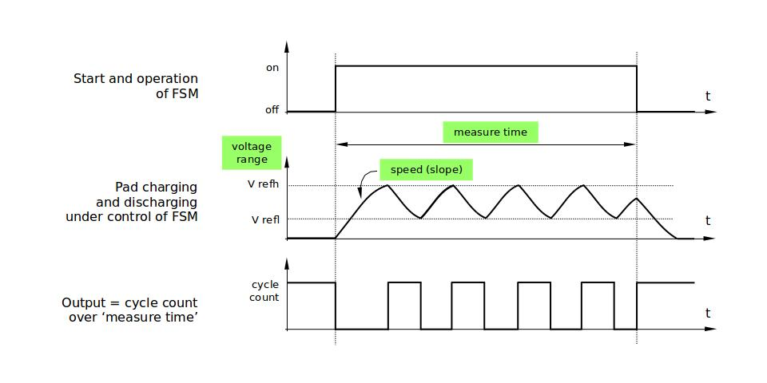

触摸传感器#
触摸传感器系统由保护覆盖层、触摸电极、绝缘基板和走线组成，保护覆盖层位于最上层，绝缘基板上设有电极及走线。用户触摸覆盖层将产生电容变化，根据电容变化判断此次触摸是否为有效触摸行为。
ESP32 最多可支持 10 个电容式触摸传感器通道/GPIO。
触摸传感器可以以矩阵或滑条等方式组合使用，从而覆盖更大触感区域及更多触感点。触摸传感由软件或专用硬件计时器发起，由有限状态机 (FSM) 硬件控制。
API 介绍#
下面将 API 分解成几个函数组进行介绍，帮助用户快速了解以下功能：
初始化触摸传感器驱动程序
配置触摸传感器 GPIO 管脚
触摸状态测量
调整测量参数（优化测量）
滤波采样
触摸监测方式
设置中断信号监测触碰动作
中断触发，唤醒睡眠模式
初始化触摸传感器驱动程序#
使用触摸传感器之前，需要先调用 touch_pad_init() 函数初始化触摸传感器驱动程序。此函数设置了 API 参考 项下的 Macros 中列出的几项 .._DEFAULT 驱动程序参数，同时删除之前设置过的触摸传感器信息（如有），并禁用中断。
如果不再需要该驱动程序，可以调用 touch_pad_deinit() 释放已初始化的驱动程序。
配置触摸传感器 GPIO 管脚#
调用 touch_pad_config() 使能某一 GPIO 的触感功能。
使用 touch_pad_set_fsm_mode() 选择触摸传感器测量（由 FSM 操作）是由硬件定时器自动启动，还是由软件自动启动。如果选择软件模式，请使用 touch_pad_sw_start() 启动 FSM。
触摸状态测量#
借助以下两个函数从传感器读取原始数据和滤波后的数据：
touch_pad_read_raw_data()touch_pad_read_filtered()
这两个函数也可以用于检查触碰和释放触摸传感器时传感器读数变化范围，然后根据这些信息设定触摸传感器的触摸阈值。
❗ 注意
使用
touch_pad_read_filtered()之前，需要先调用 滤波采样 中特定的滤波器函数来初始化并配置该滤波器。
测量方式#
触摸传感器会统计固定时间内的充放电次数，其计数结果即为原始数据，可由 touch_pad_read_raw_data() 读出。上述固定时间可通过 touch_pad_set_measurement_clock_cycles() 设置。完成一次测量后，触摸传感器会在下次测量开始前保持睡眠状态。两次测量之前的间隔时间可由 touch_pad_set_measurement_interval() 进行设置。
❗ 注意
若设置的计数时间太短（即测量持续的时钟周期数太小），则可能导致结果不准确，但是过大的计数时间也会造成功耗上升。另外，若睡眠时间加测量时间的总时间过长，则会造成触摸传感器响应变慢。
优化测量#
触摸传感器设有数个可配置参数，以适应触摸传感器设计特点。例如，如果需要感知较细微的电容变化，则可以缩小触摸传感器充放电的参考电压范围。用户可以使用 touch_pad_set_voltage() 函数设置电压参考低值和参考高值。
优化测量除了可以识别细微的电容变化之外，还可以降低应用程序功耗，但可能会增加测量噪声干扰。如果得到的动态读数范围结果比较理想，则可以调用 touch_pad_set_measurement_clock_cycles() 函数来减少测量时间，从而进一步降低功耗。
可用的测量参数及相应的 set函数总结如下：
触摸传感器充放电参数：
电压门限：touch_pad_set_voltage()
速率（斜率） touch_pad_set_cnt_mode()
单次测量所用的时钟周期：touch_pad_set_measurement_clock_cycles()
电压门限（参考低值/参考高值）、速率（斜率）与测量时间的关系如下图所示：

上图中的 Output 代表触摸传感器读值，即一个测量周期内测得的脉冲计数值。
所有函数均成对出现，用于设定某一特定参数，并获取当前参数值。例如：touch_pad_set_voltage() 和 touch_pad_get_voltage()。
滤波采样#
如果测量中存在噪声，可以使用提供的 API 函数对采样进行滤波。使用滤波器之前，请先调用 touch_pad_filter_start() 启动该滤波器。
滤波器类型为 IIR（无限脉冲响应滤波器），可以调用 touch_pad_set_filter_period() 配置此类滤波器的采样周期。
如需停止滤波器，请调用 touch_pad_filter_stop() 函数。如果不再使用该滤波器，请调用 touch_pad_filter_delete() 删除此滤波器。
触摸监测#
触摸监测基于用户配置的阈值和 FSM 执行的原始测量，并由 ESP32 硬件实现。用户可以调用 touch_pad_get_status() 查看被触碰的触摸传感器，或调用 touch_pad_clear_status() 清除触摸状态信息。
也可以将硬件触摸监测连接至中断，详细介绍见下一章节。
如果测量中存在噪声，且电容变化幅度较小，硬件触摸监测结果可能就不太理想。如需解决这一问题，不建议使用硬件监测或中断信号，建议用户在自己的应用程序中进行采样滤波，并执行触摸监测。
中断触发#
在对触摸监测启用中断之前，请先设置一个触摸监测阈值。然后使用 触摸状态测量 中所述的函数读取并显示触摸和释放触摸传感器时测得的结果。如果测量中存在噪声且相对电容变化较小，请使用滤波器。用户也可以根据应用程序和环境条件，测试温度和电源电压变化对测量值的影响。
确定监测阈值后就可以在初始化时调用 touch_pad_config() 设置此阈值，或在运行时调用 touch_pad_set_thresh() 设置此阈值。
下一步就是设置如何触发中断。用户可以设置在阈值以下或以上触发中断，具体触发模式由函数 touch_pad_set_trigger_mode() 设置。
最后用户可以使用以下函数配置和管理中断调用：
touch_pad_isr_register() / touch_pad_isr_deregister()touch_pad_intr_enable() / touch_pad_intr_disable()
中断配置完成后，用户可以调用 touch_pad_get_status() 查看中断信号来自哪个触摸传感器，也可以调用 touch_pad_clear_status() 清除触摸传感器状态信息。
❗ 注意
触摸监测中的中断信号基于原始/未经滤波的采样（对比设置的阈值），并在硬件中实现。启用软件滤波 API (请参考 滤波采样）并不会影响这一过程。
从睡眠模式唤醒#
如果使用触摸传感器中断将芯片从睡眠模式唤醒，用户可以选择配置一些触摸传感器，例如 SET1 或 SET1 和 SET2，触摸这些触摸传感器将触发中断并唤醒芯片。请调用 touch_pad_set_trigger_source() 实现上述操作。
用户可以使用以下函数管理 ‘SET’ 中触摸传感器所需的位模式配置：
touch_pad_set_group_mask() / touch_pad_get_group_mask()touch_pad_clear_group_mask()
实验内容#
触摸传感器中断示例#
本实验演示如何设置 ESP32 的电容式触摸板外设以在触摸板时触发中断。它还展示了当需要更高的触摸检测灵敏度时，如何通过用于传感器设计的软件检测触摸事件。
ESP32 通过配置硬件寄存器支持触摸检测。硬件定期检测脉冲计数。如果脉冲计数超过设定的阈值，则会产生硬件中断，通知应用层某个触摸传感器通道可能被触发。
对于当垫被玻璃或塑料覆盖时的传感器设计，由“触摸”动作引起的差异可能非常小。在这种情况下，我们使用软件池和算法来降低噪声，以便仍然能够检测到脉冲计数的微小变化。在某些情况下，我们可能需要使用其他例程来动态调整阈值水平，因为它可能会根据环境条件而变化。
源代码参考#
参见参考资料与源代码
代码调试与示例输出#
使用 idf.py 以及 clion 管理项目，编码，build, flash,monitor
触摸 GPIO27 并 monitor
观察监视器打印输出如下：
I (6303) Touch pad: Waiting for any pad being touched...
I (6733) Touch pad: T7 activated!
I (7333) Touch pad: T7 activated!
I (7723) Touch pad: T7 activated!
I (8043) Touch pad: T7 activated!
I (8883) Touch pad: T5 activated!
I (9523) Touch pad: T7 activated!
I (12503) Touch pad: Waiting for any pad being touched...
I (15483) Touch pad: T7 activated!
I (16253) Touch pad: T5 activated!
I (17903) Touch pad: Waiting for any pad being touched...
I (22903) Touch pad: Waiting for any pad being touched...
❗ 注意
感应阈值在启动时通过执行简单校准自动设置。应用程序正在读取每个焊盘的电流值，并假设该值的三分之二作为感应阈值。不要在应用程序启动时触摸板，否则感应可能无法正常工作。
因为我们开发板的引脚大规模复用，请在使用时将摄像头拔下，触摸 GPIO27